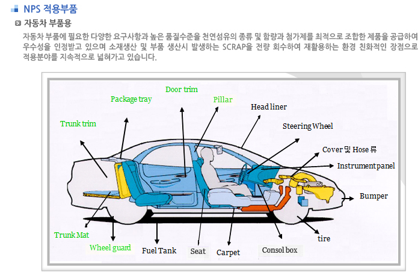
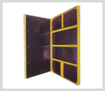
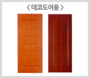

종 류
제품 및 용도
거푸집용
기존 거푸집용 합판의 내구성을 강화하고 표면을 미려하게 하기 위하여 폴리프로필렌과 목분을 혼련하여 압출한 복합시트(상표명 : NPS)를 합판 표면에 마감 처리한 새로운 개념의 거푸집용 판넬로 기존 제품의 단점을 완벽하게 개선, 보완한 가장 경제적인 거푸집용 판넬 입니다.

플라스틱 도어용
- 데코도어용
PP데코 Sheet를 NPS 표면에 부착하여 추가적인 표면마감재 없이 도어제작이 가능한 경제적인 도어소재입니다.
- 상감도어용
NPS 표면에 인쇄지를 부착하고 표면마감 처리하여 기존도어의 수분에 약한 단점을 보완한 제품입니다.
PP데코 Sheet를 NPS 표면에 부착하여 추가적인 표면마감재 없이 도어제작이 가능한 경제적인 도어소재입니다.
- 상감도어용
NPS 표면에 인쇄지를 부착하고 표면마감 처리하여 기존도어의 수분에 약한 단점을 보완한 제품입니다.

기 타
건축용 : 경량 칸막이, Partition, 바닥재, 천정재 등
조경용 : Deck, Siding 등
기타 : 식품용기, 포장용 등
조경용 : Deck, Siding 등
기타 : 식품용기, 포장용 등
이미지 자료의 텍스트
원본 도해와 함께 읽을 수 있는 Figma 수록 문구입니다.
NPS 적용부품
자동차 부품용
자동차 부품에 필요한 다양한 요구사항과 높은 품질수준을 천연섬유의 종류 및 함량과 첨가제를 최적으로
조합한 제품을 공급하여 우수성을 인정받고 있으며 소재생산 및 부품 생산시 발생하는 SCRAP을 전량
회수하여 재활용하는 환경 친화적인 장점으로 적용분야를 지속적으로 넓혀가고 있습니다.
• 산업용
NPS 적용부품
자동차 부품용
자동차 부품에 필요한 다양한 요구사항과 높은 품질수준을 천연섬유의 종류 및 함량과 첨가제를 최적으로 조합한 제품을 공급하여
우수성을 인정받고 있으며 소재생산 및 부품 생산시 발생하는 SCRAP을 전량 회수하여 재활용하는 환경 친화적인 장점으로
적용분야를 지속적으로 넓혀가고 있습니다.
Door trim
Package tray
Pillar
Headliner
Trunk trim
SteeringWheel
Cover 및 Hose 류
Instrument panel
Bumper
Trunk Mat
tire
Wheel guard
Fuel Tank
Seat
Carpet
Consol box
< 데코도어용 >